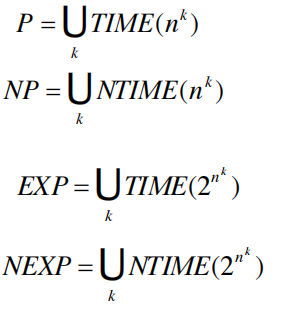
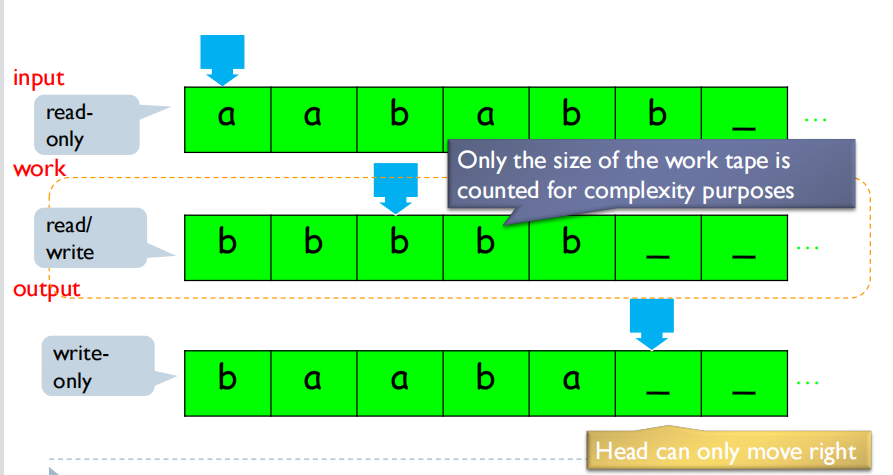
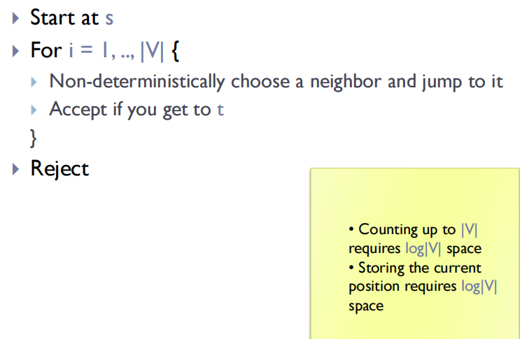
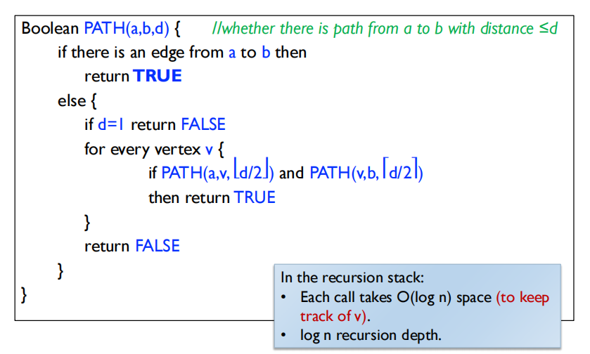
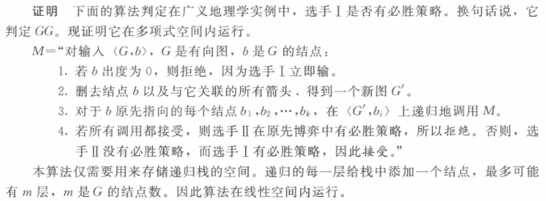
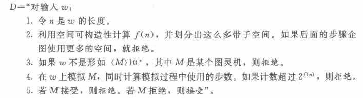
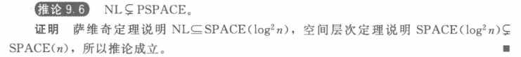
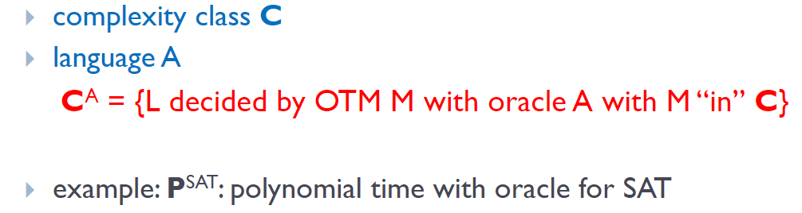
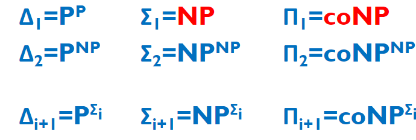

Time complexity
Definition
- Let M be a deterministic Turing machine that halts on all input. The running time or time complexity of $M$ is the function $f: N\rightarrow N$, where $f(n)$ is the maximum number of steps that $M$ uses on any input of length $n$.
Time complexity class
- TIME(t(n)): languages decidable by $O(t(n))$ time deterministic TM
- NTIME(t(n)): languages decidable by $O(t(n))$ time nondeterministic TM

- $NP = \cup_k NTIME(n ^ k)$ 的理解
： - NP 是能在多项式时间内验证答案正确性
，
- NP 是能在多项式时间内验证答案正确性
The Cobham-Edmonds thesis
- For any realistic models of computation $M_1$ and $M_2$, $M_1$ can be simulated on $M_2$ with at most polynomial slowdown.
- 只有多项式复杂度的东西才能够在实际计算机上计算
Space complexity
Space complexity class
-
For any function $f:N \rightarrow N$, we define:
- SPACE(f(n)) = { L : L is decidable by a deterministic TM M which scans $O(f(n))$ tape cells}
- NSPACE(f(n)) = { L : L is decidable by a non-deterministic TM M which scans $O(f(n))$ tape cells on any branch of its computation}
- NTIME(f(n)) 就是说 模拟的步骤 时间是 f(n)
- NSPACE(f(n)) 就是说 模拟的步骤 空间是 f(n)
-
Example:
-
SAT $\in$ SPACE(n)
can be solved in linear space
-
Low Space classes
- L = SPACE($\log n$)
- NL = NSPACE($\log n$)
- PSPACE = $\cup_k$ SPACE($n^k$)
- NPSPACE = $\cup_k$ NSPACE($n^k$)
3-TAPE machines

- Configuration
- the state $O(c)$
- the content of the work tape $O(g ^ {f(n)})$
- the head position of input tape $O(n)$
- the head position of work tape $O(f(n))$
- total number = $O(cnf(n)g^{f(n)}) = O(n\cdot 2^{f(n)})$
- If $f(n) = O(\log n)$, configuration 的总数 $O(n)$
- 消耗 空间 $O(f(n))$ 的 图灵机 在 时间 $n 2 ^ {O(f(n))}$ 内运行
Some observations
-
$TIME(f(n))⊆SPACE(f(n))$
- a machine uses f(n) time can use at most f(n) space
-
$SPACE(f(n))⊆TIME(f(n)·2^{O(f(n))})$
-
a machine uses $O(f(n))$ space can have at most $2^{O(f(n))}$ configurations
-
a TM that halts may not repeat a configuration
-
the total time to
“ ”
-
-
$NTIME(f(n)) \subset SPACE(f(n))$
- we can enumerate all $O(f(n))$ guesses in $O(f(n))$ space
-
$ L⊆P⊆NP⊆PSPACE=NPSPACE⊆EXPTIME$
NL Completeness
Log-space reduction
- $A$ is log-space reducible to $B$, written $A \leq _L B$, if there exists a log space TM $M$ that, given input $w$, outputs $f(w)$ s.t. $w\in A$ iff $f(w) \in B$.
Definition
- A language $B$ is NL-complete if
- $B \in NL$
- $\forall A \in NL, A \leq_L B$
- Thm: If $A\leq_L B$ and $B \in L$, then $A \in L$.
- 直接考虑 对于 $A$ 的输入 $w$
， ， - 我们不计算整个 $f(w)$
， 。 - 从 $w$ 到 $f(w)$ 和从 $f(w)$ 到最终的 output 都是 log space
，
- 直接考虑 对于 $A$ 的输入 $w$
- More generally, if $f$ and $g$ are log-space computable functions, $f \circ g$ is also log-space computable.
（ ） - log space 可以让输出和输入的长度是poly关系
（ ）
$PATH$
-
Graph Connevtivity
- $PATH$ 有向图
， - in $NL$ and in $P$
- $USTCON$ 无向图
， - in $L$
- $PATH$ 有向图
-
$PATH \in NL$

-
$PATH \in P$
- 从 $s$ 出发 bfs
Savitch’s Theorem
- $NL \subset SPACE(\log ^ 2n)$
- Proof:
- First prove $PATH$ is NL-complete
- Then show an algorithm for $PATH$ that uses $\log ^ 2 n$ space
$PATH$ is NL-complete
- 已经证明了 $PATH \in NL$
， - 对于一个语言 $A$
， ， - For input $w$, we construct a directed graph $\langle G, s, t\rangle $ in 对数空间内
， - $M$ 的每个 configuration 视作一个节点
， ， ， ， - 从 $w$ 到 $\langle G, s, t\rangle$ 的转换也是 log-space
- 列举所有的 nodes nodes就对应 configuration 所以是log space
- For every two nodes, check whether connected 这只需要看一下head指向的位置
$NL \subset P$
- a simple corollary
- $PATH \in P$
- all $NL$ language is log-space reducible to $PATH$
- -> all $NL$ language is poly-time reducible to $PATH$
- any $NL$ language is in $P$
Then show $PATH$ can be decided by a deterministic TM in $O(\log ^ 2n)$ space

- $S(n) = S(n / 2) + O(\log n)$
So we have proven $NL \subset SPACE (\log ^ 2 n)$
Padding argument – Example
-
Claim: If $P = NP$, then $EXP = NEXP$.
-
Proof.
Since $EXP \subset NEXP$ is by definition, we only need to show $NEXP \subset EXP$.
考虑 $NEXP$ 中的某个语言 $L$
， $$L' = \left\{x 1 ^ {2 ^ {|x| ^ c}} \mid x \in L\right\} $$其中 1 表示一个不在 $L$ 中的符号.
首先我们证明 $L'$ is in $NP$, 然后我们通过 $NP= P$, 我们证明 $L$ is in EXP.
首先证明 $L'$ is in $NP$.
给定输入 $x'$ 我们需要判断 $x' \in L'$ or not. 我们先看 $x'$ 的形式. 如果 $x'$ 符合 $L'$ 的形式, 就是说存在一个$x$, $x' = x \left\{x 1 ^ {2 ^ {|x| ^ c}} \mid x \in L\right\}$, simulate $M(x)$. 这个 simulation 的时间 是 $2 ^ {|x| ^ c}$, 关于 $x'$ 的长度是线性的. 自然也是多项式的. 这整个过程就能 decide $x'$ is in $L'$ or not. 并且是 $NP$ 的. 因此, $L'$ is in $NP$.
由于假设 $P=NP$, $L'$ is in $P$. Then, 存在一个确定自动机, 能够在 poly time 内decide $L'$. 这个自动机关于 $|x|$ 的复杂度就是 $EXP$. 因此 $L \in EXP$.
-
padding 指的就是在 $x$ 后面加许多个 $1$ 的操作. 这有时用于不同复杂度类型的转换.
Savitch’s Theorem ---- Generalized form
-
Theorem:
$\forall S(n) \geq \log (n)$, $NSPACE (S(n)) \subset SPACE(S(n) ^ 2)$
-
用 $NL \subset SPACE(\log ^ 2 n)$ 证明
Definition
-
A function $f: N \rightarrow N$, where $f(n) \geq \log n$, is called space constructable, if the function that maps $1 ^ n$ to the binary representation of $f(n)$ is computable in space $O(f(n))$.
-
A function $f: N \rightarrow N$, where $f(n) \geq n \log n$, is called time constructable if the function that maps $1^n$ to the binary representation of $f(n)$ is computable in time $O(f(n))$.
-
All commonly used functions are space/time constructable.
Claim
-
For any two space constructable functions $s_1(n), s_2(n) \geq \log n, f(n) \geq n$:
$NSPACE(s_1(n)) \subset SPACE(s_2(n))$ can derive that $NSPACE(s_1(f(n))) \subset SPACE(s_2(f(n)))$
Proof
我们也用 padding 的方式去证明 Savitch’s Theorem.
假设 $L \in NSPACE(s_1(f(n)))$
就是有一个 $s_1(f(n))$ 空间复杂度的 NTM $M_L$ 能够 decide $L$.
我们想要转化到一个 $NSPACE(s_1(n))$ 的问题 就是把输入长度变成 $f(n)$
我们将输入 $x$ 从长度 $n$ 补到 $f(n)$
令 $L'=\{x \text{@} 0 ^ {f(n) -n} \mid x \in L\}$ , 那么 我们考虑这样一个 NTM
- 数最后的 $0$ 的数量, check 是否有某个 $n$ 满足 $0$ 的数量 等于 $f(n)-n$
- 假如找到了这样的 $n$, 我们相当于得到了输入 $x$, 然后 run $M_L$ on $x$
之前那个 $M_L$ 的空间复杂度是 $s_1(f(n))$ 其中 $n$ 指的是 $x$ 的长度, 所以现在这个 $NTM$ 的复杂度就是 $s_1(n)$. 那么 $L' \in NSPACE(s_1(n))$. 于是, 根据条件, $L' \in SPACE(s_2(n))$, 再做一个从 $L' \rightarrow L$ 的转换, 我们就得到了一个 确定性图灵机, works in $O(s_2(f(n)))$ space.
原始定理的证明
- 只要 $s_1(n) = \log(n)$, $s_2(n) = \log^2(n)$, 我们已经有 $NSPACE(s_1(n)) \subset SPACE(s_2(n))$, 那么我们就有 $NSPACE(s_1(f(n))) \subset SPACE(s_2(f(n)))$ 对任意的 $f(n) \geq n$. 代入就是 $NSPACE(\log(f(n))) \subset SPACE(\log ^ 2(f(n)))$. 令 $g(n) = \log (f(n))$, 那么就是 $NSPACE(g(n)) \subset SPACE(g^2(n))$, $g(n)$ 的限制条件只有 $g(n) \geq \log n$.
Corollary
-
$PSPACE = NPSPACE$
-
Clearly, $PSPACE \subset NPSPACE$. By Savitch’s theorem, $NPSPACE \subset PSPACE$.
Remark
可以看到, 时间复杂度和空间复杂度有很大不同. NP 和 P 差距极大, 而 NSPACE 和 PSPACE 并没有太大的差别.
PSPACE
- 在多项式空间内能被 确定图灵机 decide 的语言
- e.g. SAT is in PSPACE 只需要顺序枚举每一个 $x_i$ 的值 也因此 $NP \subset PSPACE$
TQBF (true quantified Boolean formula)
- complete for PSPACE
Problem statement
- Instance: a fully quantified Boolean formula $\phi$
- fully quantified 就是对于 formula 中的每个变量, 都有一个 $\exists$ 或者 $\forall$ 去限定他 -> quantifier
- Problem: to decide if $\phi$ is true
TQBF is in PSPACE
- We describe a poly-space algorithm for evaluating $\phi$
- If $\phi$ has no quantifiers: 那么式子里所有变量取值都确定了, 直接算
- If $\phi = \forall x (\psi(x))$: 那么把 $x=0$ 和 $x=1$ 都带进去算, 都 accept 才 accept
- If $\phi = \exists x (\psi(x))$: 把 $x=0$ 和 $x=1$ 带进去算, 只要有一个 accept 就 accept
- 空间是线性的
PSPACE Completeness
Definition
- A language $B$ is PSPACE-complete iff
- $B \in PSPACE$
- $\forall A \in PSPACE, A \leq_P B$
- 这里的 $\leq_P$ 就是多项式时间的归约
TQBF is PSPACE-complete
- 已经证明了 TQBF is in PSPACE
- 需要证明 TQBF is PSPACE-hard
- 给定一个图灵机 $M$ for a language $L \in PSPACE$, 给定一个输入 $x$, 需要将 $M$ 是否 accept $x$ 多项式时间内归约到 $TQBF$
- construct a QBF $\phi$ of polynomial size s.t. $\phi$ is true 等价于 $M$ accepts $x$
- 对所有的 configuration 编码, for configurations $u, v$ and an integer $t$, define $\phi(u, v, t) = \text{true}$ iff $v$ is reachable from $u$ in $t$ steps
- 下面用 分治
- 首先考虑 $\phi(u,v,1)$ 就是说 $u$ 与 $v$ 一步就到达, 那么他们最多在三个位置上能不同, 其他位置都相同, 非常好判断
- 对于 $t > 1$, 我们有 $\phi(u,v,t) = \exists m [\phi(u, m, t / 2) \mathbf{\ and \ } \phi(m, v, t / 2)]$
- 问题在于 $t$ 并不一定是 poly(|x|) 的
- change the previous 递推式 to
- size: $S(t) = S(t / 2) + poly(|x|)$, thus $S(t)$ is $poly(|x|)$
- $\phi_{M, x} = \phi(c_{start}, c_{accept}, h)$ is TRUE 当且仅当 $M$ accepts $x$ in $h$ steps
- $\phi$ is constructible in poly-time
- 证毕
Formula Game
Description
- 一个 formula $\psi$ with variables $x_1, x_2, \cdots, x_n$
- 两个人轮流选择 $x_i$ 的取值, 第一个人 $A$ 想要 $\psi$ 为真, 第二个人 $E$ 想要 $\psi$ 为假
- FORMULA-GAME = $\{\langle \psi \rangle \mid \text{ 在 } \psi \text{ 的 formula game 中 E 有必胜策略 } \}$
- 这个问题等价于 TQBF
Generalized Geography game
Description
- 一个有向图 $G$ 起点 $s$
- 两个人轮流选择一条边往下走 走不了的输
- $GG = \{\langle G, b \rangle \mid \text{Player I has a winning strategy on G starting from b}\}$
- $GG$ is PSPACE-complete
-
$GG$ is PSPACE

-
把 Formula Game 规约到他
-
Unfinished
-
-
Hierarchy theorem (层次定理)
Time Hierarchy Theorem
- For any time constructable function $f: N \rightarrow N$, 存在语言 $L$ that is decidable in time $O(f(n))$, but not in time $O\left(\frac {f(n)} {\log f(n)} \right)$
Space Hierarchy Theorem
- For any space constructable function $f:N \rightarrow N$, 存在语言 $L$ that is decidable in space $O(f(n))$ but not in space $o(f(n))$
证明思路
- 采用跟证明 $A_{TM}$ 不可解时用的 对角线法
- 我们想要一个函数 $D$, 他对应的语言 $L$, 有 $D$ 在 $O(f(n))$ 空间内运行, 并且 $L$ 不同于任何在 $o(f(n))$ 内能判定的语言
- 不同于任何这样的语言 -> 有至少一个输入结果不同 -> 对于 M, 在输入 <M> 上不同
Proof

对于所有的 $o(f(n))$ 空间内能判定的语言, 在第四步的判定中能够运行完, 因为模拟一个 $g(n)$ 空间内运行的图灵机 $M$ 只需要 $dg(n)$ 空间, 其中 $d$ 是依赖于 $M$ 的常数. 所以可以找到一个充分大的 $n_0$, $dg(n_0) < f(n_0)$. 我们在 $\langle M \rangle$ 后面补上 $10 ^ {n_0}$, 让长度足够, 所以第四步就能运行完.
这样, 运行的结果一定与 $M(\langle M \rangle)$ 本身的结果相反, 所以 $D$ 不能判定 $A$.
Corollary

The polynomial Hierarchy (PH)
For $i\geq 1$, a language $L$ is in $\Sigma_{i^p}$ if there exists a polynomial time TM $M$ and a polynomial $q$ s.t.
$x \in L \Leftrightarrow \exists u_{1} \in\{0,1\}^{q(|x|)} \forall u_{2} \in\{0,1\}^{q(|x|)} \ldots Q_{i} u_{i} \in\{0,1\}^{q(|x|)} M\left(x, u_{1}, \ldots, u_{i}\right)=1$
where $Q_i$ is $\exists$ when i is odd; is $\forall$ when i is even.
(sometimes we can omit superscript “p”)
-
Theorem: Any wf. $A$ 等价于 wf. $B$ in prenex form.
-
$\Sigma_0 = P$
- $\Sigma_0$ 就是 $x\in L \Leftrightarrow M(x)=1$ 就是一个多项式时间内能 decide 的 TM
-
$\Sigma_1 = NP$
- $\Sigma_1$ 就是 $x\in L \Leftrightarrow \exists u, M(x,u)=1$ 就是先猜一个解然后多项式时间内判断是否正确
-
定义 $PH=\cup_i \Sigma_i$
-
定义 $\Pi_{i^p} = co\Sigma_{i^p}$, which is
$x \in L \Leftrightarrow \forall u_{1} \in\{0,1\}^{q(|x|)} \exists u_{2} \in\{0,1\}^{q(|x|)} \ldots Q_{i} u_{i} \in\{0,1\}^{q(|x|)} M\left(x, u_{1}, \ldots, u_{i}\right)=1$
-
跟之前 $\Sigma$ 和 $\Pi$ prenex form 差不多
-
Note that $\Sigma_{i^p}\subset \Pi_{\\{i+1}^p}\subset \Sigma_{\\{i+2}^p}$, 所以 $PH = \cup_i \Pi_i$
Oracle Turing Machine (OTM)
Definition
- 针对一个语言 $A$ 的 oracle 是一个能判断 $w$ 是否属于 $A$ 的黑盒子. Oracle Turing Machine $M^A$ 指的是在一个通常的图灵机上增加查询 $A$ 的 oracle 的能力. 有三个特殊的状态 $q_{query}, q_{yes}, q_{no}$. 每当进入到 $q_{query}$ 态的时候, 就可以在一步之内查询在询问纸带上的 $y$ 是否属于 $A$ 并且依照结果进入到 $q_{yes}$ 或者 $q_{no}$ 状态.
- 我们可以类似地定义 Nondeterministic OTM
一些记号
-

-
Both together: $C^D$ = languages decided by OTM
“ ” - e.g. $P^{SAT}=P^{NP}$
-
$\Sigma_2 = NP^{NP}$
-
$\Pi_2 = co{NP}^{NP}$
-

Relativization
- Many proofs and techniques we have seen are relativize
- they hold after replacing all TMs with oracle TMs that have
access to an oracle $A$ - including diagonalization
- they hold after replacing all TMs with oracle TMs that have
- 我们想要说明 $P$ 是否等于 $NP$ 的问题不是简单的对角化就能解决的
- 只要说明 加了某个 oracle 之后 $P^{A}= NP^{A}$, 加了另一个 oracle 之后 $P^B \neq NP^B$
$P^A = NP^A$
- 这需要 $A$ 很牛逼
- $A=TQBF$ works
- $PSPACE ⊆P^{TQBF} ⊆NP^{TQBF} ⊆NPSPACE$
- we also know $PSPACE=NPSPACE$
$P^B \neq NP^B$
-
定义 $L(B) = \{1^k : \exists x \in B, s.t. |x|=k\}$
-
we will find $B$ such that $L(B) \in NP^B - P^B$
-
首先, $L(B) \in NP^B$
- 对于任意 $w$ 我们想判断是否属于 $L(B)$
- 只需要猜一个 $x \in B$ 然后让 $|x|=|w|$
-
其次, find $B$ such that $L(B) \notin P^B$
-
unfinished
-